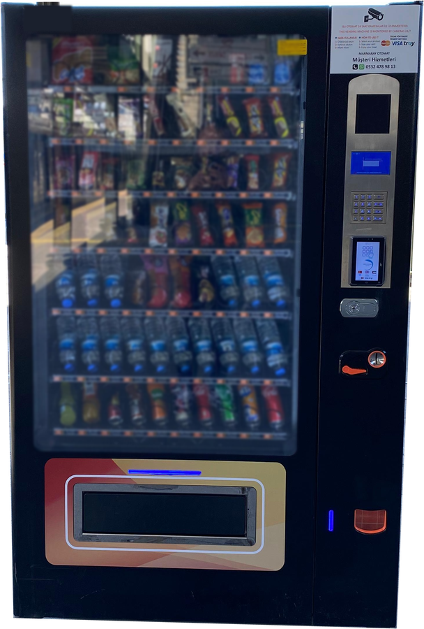
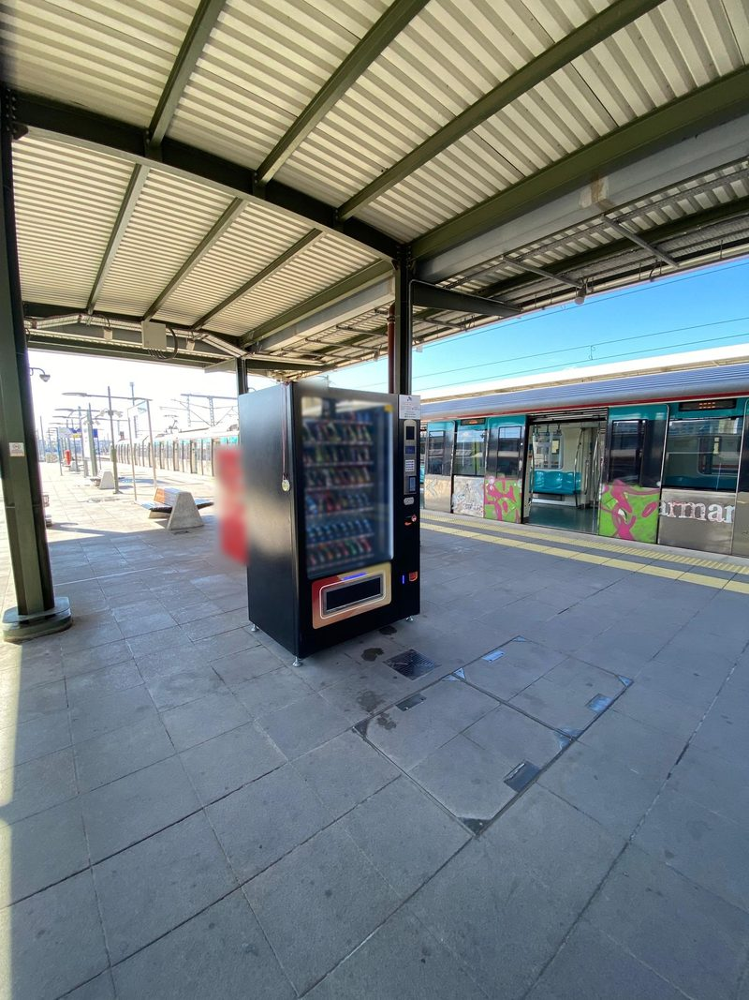

Implantation
Nous installons nos distributeurs sur les quais, aux entrées des gares et aux points de correspondance, là où vous les trouvez facilement.
Boissons fraîches, en-cas, croque-monsieur, thé et café dans 43 gares, de Halkalı à Gebze. Chaque jour, Marmaray Otomat vous propose des produits frais avec un paiement rapide et simple.



En-cas et boissons fraîches
Marmaray Otomat offre un service rapide, de qualité et fiable grâce à des distributeurs modernes. Avec 126 appareils dans les 43 gares du Marmaray, nous proposons chaque jour aux voyageurs des produits frais et variés.
Nos distributeurs proposent 24 h/24 boissons fraîches, en-cas, sandwichs livrés frais chaque jour, croque-monsieur, thé et café. Vous pouvez payer par carte de crédit, carte bancaire, QR ou İstanbulkart. Nos normes d'hygiène et de qualité placent toujours la satisfaction client au premier plan.
Marmaray Otomat est un service Aykar.
Des quais aux entrées, nous sommes présents à chaque étape de votre trajet sur le Marmaray.
Nous installons nos distributeurs sur les quais, aux entrées des gares et aux points de correspondance, là où vous les trouvez facilement.
Nous réapprovisionnons régulièrement les boissons fraîches, en-cas, croque-monsieur et boissons chaudes. Nos sandwichs arrivent frais chaque jour.
Vos demandes et réclamations comptent. Scannez le QR code du distributeur pour nous joindre en quelques secondes ; nous examinons chaque signalement.
Nous vérifions les dates de péremption et gardons nos distributeurs propres et bien rangés.
Vous pouvez payer de quatre façons. Choisissez votre moyen de paiement et suivez les étapes.
Tapez le numéro indiqué sur l'étagère du produit. Le produit et le prix s'affichent à l'écran.
Approchez votre carte de crédit du lecteur (sans contact) ou insérez-la. Saisissez votre code si nécessaire.
Approchez votre carte bancaire du lecteur (sans contact) ou insérez-la. Saisissez votre code si nécessaire.
Scannez le QR code affiché avec l'application de votre banque et validez le paiement.
Approchez votre İstanbulkart du lecteur ; le montant est débité de votre solde.
Une fois le paiement validé, le produit tombe dans le bac. En cas de problème, scannez le QR code du distributeur et écrivez-nous.
126 distributeurs dans les 43 gares, de Halkalı à Gebze : boissons fraîches, en-cas, sandwichs frais, croque-monsieur chauds, thé et café, payables par carte, QR ou İstanbulkart.
Touchez un point de la ligne pour afficher la gare sur la carte.
Aucune gare trouvée sous ce nom.
Touchez une gare pour l'afficher sur la carte. Ouvrir dans Google Maps
Carte de crédit, carte bancaire, paiement par QR et İstanbulkart. Consultez le guide de paiement pour les étapes.
Scannez le QR code du distributeur ; la gare et l'appareil sont remplis automatiquement. Envoyez votre réclamation, nous vérifierons et vous rappellerons.
Inutile. Chaque distributeur a son propre QR code ; en le scannant, la gare et l'appareil sont sélectionnés automatiquement. Si vous ne pouvez pas scanner, choisissez la gare et l'emplacement dans le formulaire.
Nos sandwichs arrivent frais chaque jour et les distributeurs sont réapprovisionnés quotidiennement.
Nos distributeurs fonctionnent 24 h/24. L'accès aux gares dépend des horaires du Marmaray.
Utilisez le formulaire d'avis. Nous tenons compte des suggestions pour notre assortiment.
Écrivez-nous si vous avez rencontré un problème avec un distributeur ou si vous souhaitez un produit.
Le plus rapide : scannez le QR code du distributeur. La gare et l'appareil sont sélectionnés automatiquement.



Küçükçekmece / İstanbul
[Açık adres]
Horaires du bureau : [En semaine 00:00–00:00, samedi 00:00–00:00]